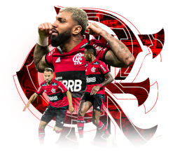

Seja Bem Vindo a Terceira Página do Clube de Regatas do Flamengo.
Vamos levar você para assitir o treino do flamengo, para isso, clique aqui.
Curiosidades sobre o Flamengo
- O clube nem sempre teve as cores Vermelho e Preto:
- Para início de conversa, o rubro-negro carioca, como é popularmente conhecido, nem sempre trajou essas cores em seu manto de jogo. No começo, quando o Flamengo era apenas um clube de Remo(o que explica o Clube de Regatas), seus atletas usavam regatas listradas em azul e amarelo. Contudo, essas cores desbotam muito facilmente com o forte sol do Rio de Janeiro, além do fato que os tecidos dessas cores eram mais difíceis de encontrar e tinham, muitas vezes, que ser importados.
Portanto, a solução encontrada foi a utilização das duas cores mais fortes que haviam, o preto e o vermelho. Além da praticidade, também tornou o uniforme muito mais bonito, marcante e forte, intimidando os competidores, e apaixonando sua torcida. O time de futebol homenageou o manto original por duas vezes, uma em 2010 e outra em 2017, e, digamos que o vermelho e preto ficou melhor mesmo.
- O mascote Original não era aum Urubu:
- Uma curiosidade sobre o mascote do Flamengo é que, ao contrário do que muitos acreditam, o mascote original do clube não era o Urubu, mas sim o marinheiro Popeye. Pois é, pode parecer uma escolha estranha hoje em dia, mas na época em que foi designado, em 1940, o clube ainda era extremamente identificado com o Remo, e por conseguinte, com os marinheiros.
- Origem do Futebol do Clube de Regatas do Flamengo
- Uma curiosidade sobre o mascote do Flamengo é que, ao contrário do que muitos acreditam, o mascote original do clube não era o Urubu, mas sim o marinheiro Popeye. Pois é, pode parecer uma escolha estranha hoje em dia, mas na época em que foi designado, em 1940, o clube ainda era extremamente identificado com o Remo, e por conseguinte, com os marinheiros.

Assita os melhores momentos do jogo entre Flamengo e Santos clicando aqui.